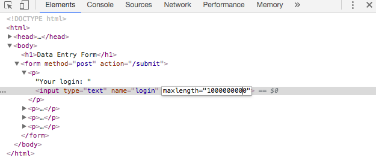
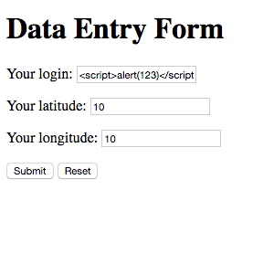
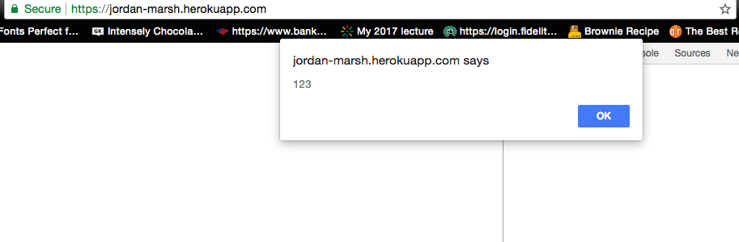
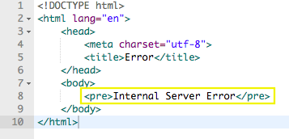
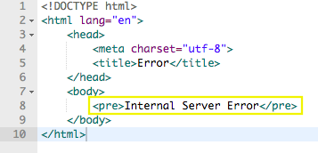

Security and Privacy Assessment
Introduction
I have been hired a security consultant to perform a security assessment of a potentially vunerable web application: "https://jordan-marsh.herokuapp.com/". The web application allows users to submit a login and their latitude and longitude, which accesses a database to return a log of coordinate checkins. This document identifies the website's vunerabilities and suggests solutions to fix them.
Methodology
"Black box" testing was first used where the web application was first examined without looking into the internal structure. Afterwards, "white box" testing was used where the source code was evaluated for possible security issues. The Google Chrome extension, Postman, was used to help perform HTTP request and reading responses for testing purposes.
Abstract Findings
The web application places too much trust in user-based input. There is a lack of validation processes used on the server side to prevent attacks. Attempts are made to do very simple checks on user input, but not enough is implented to protect against malicious attacks. Many of the vunerabilities allow the attacker to use unexpected input, which does not follow the intended functionality of the web application and causes security issues.
Issues Found
1. Cross-Site Scripting
- Location: "https://jordan-marsh.herokuapp.com/entry.html" is where the attack is implemented and "https://jordan-marsh.herokuapp.com/" is where the attack is carried out.
- Severity: HIGH
- XSS attacks allow attackers to inject malicious scripts through user entry points. It is named one of OWASP's Top 10 Application Security Risks for 2017 because it is so widespread and can provide access to sensitive information like cookies and session tokens. The browser uses the malicious script because the user-based input is believed to be a trusted source.
- Description: Within the HTML
<input> tag there is a maxlength=10 to limit the length of user input so that a malicious script cannot be inputted. However, this can be easily be overrided by modifying the HTML code and expanding the maxlength, as shown below. This allows a malicious script to be entered in the login input. Since there is no validation done on the login input, var login = request.body.login; on the server side, I was able to send a popup alert into the web application. More importantly, I could have sent a script to document a cookie or other more harmful actions.



- Resolution: Measures can be taken against Cross-Site Scripting in this situation. For example, rather than placing a maxlength limit within the HTML input tag or in addition to doing this, another layer of validation for the login can be implemented on the server side, such as truncating the string if needed once the information is submitted. By doing this, even if a malicious script is inputted, it will not be able to carry out its attack and cannot be directly changed like the HTML attribute. There is a validator to ensure that the latitude and longitude inputs are floats, but there is no validation for the login beyond checking if it is undefined. Further efforts can include making sure the login input is a string or checking for specific characters that are suspicious to potential attacks like ' or /.
2. Server Crash with invalid JSON
- Location: "https://jordan-marsh.herokuapp.com/sendLocation" is where the invalid JSON causes the server to crash.
- Severity: MEDIUM
- The server crashes and renders the page useless;however, the problem can be easily resolved.
- Description: When an additonal string and its corresponding value is added to the JSON data to be inserted into the database, sent as a POST request, the server crashes, see examples below. When the information is being inserted into the database in
collection.insert(toInsert, function (errorUpdate, result) errorUpdate is not defined. As a result, there is nothing to catch the error. Usually, if an object is submitted in a different format, the errorUpdate will be invoked to handle the error. In this case, the error is thrown without a catch.
 

- Resolution: Route the error to a try-catch block that will handle an error with the JSON data. Caution can also be taken to make sure that properties specifically needed are only processed and avoid other things that the JSON might contain. Only body parsing does not guarantee the JSON data will come as expected, therefore having filters can also help avoid the problem.
3. Server Crash with invalid JSON
- Location: "https://jordan-marsh.herokuapp.com/submit" is where the invalid JSON causes the server to crash.
- Severity: MEDIUM
- The server crashes and renders the page useless;however, the problem can be easily resolved.
- Description: This is a similar issue to the one listed above (see 2), but is found in a different section of the source code. When an additonal string and its corresponding value is added to the JSON data to be inserted into the database, sent as a POST request, the server crashes, see examples below. In this example, the expected input strings are login, lat, and lng. An additional
"cake" : "strawberry balsamic" is added and creates a crash because it is not accounted for within the server side. Notice how in the bottom right hand corner a status of 500 is returned. When the information is being inserted into the database in collection.insert(toInsert, function (errorUpdate, result) errorUpdate is not defined. As a result, there is nothing to catch the error. Usually, if an object is submitted in a different format, the errorUpdate will be invoked to handle the error. In this case, the error is thrown without a catch.

- Resolution: Route the error to a try-catch block that will handle an error with the JSON data. Caution can also be taken to make sure that properties specifically needed are only processed and avoid other things that the JSON might contain. Only body parsing does not guarantee the JSON data will come as expected, therefore having filters can also help avoid the problem.
Conclusion
The web application in its current state is not secure and action can and should be taken to update the web security against malicious attacks. A lot of the problems stem from trusting user input. Some suggestions to help prevent attacks are going over user input with methods like escaping, validating input, and sanitizing. Escaping helps censor input by not allowing characters like < or > which may be linked to attacks. Validating input is a good way to ensure a program works as intended by making sure its in the proper form while sanitizing checks over for illegal characters to make sure things are "safe". These efforts will help minimize chances of an attack, but do not completely eliminate the risk of an attack. It can also be a good idea to use tools that perform scans for website vunerabilities and to also look over code logic for general errors especially when adding new parts to an application.